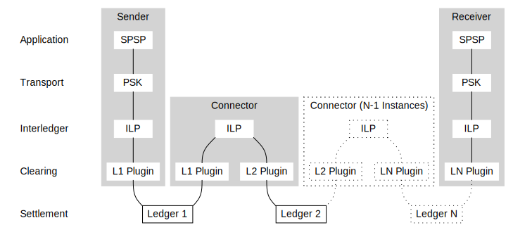

This document specifies the Interledger Protocol (ILP). It draws heavily from the definition of the Internet Protocol (IP) defined in RFC 791. The interledger protocol is the culmination of more than a decade of research in decentralized payment protocols. This work was started in 2004 by Ryan Fugger, augmented by the development of Bitcoin in 2008 and has involved numerous contributors since then.
Payment networks today are siloed and disconnected. Payments are relatively easy within one country or if the sender and recipient have accounts on the same network or ledger. However, sending from one ledger to another is often impossible. Where connections do exist, they are manual, slow, or expensive.
The Interledger Protocol provides for routing payments across different digital asset ledgers while isolating senders and receivers from the risk of intermediary failures. Secure multi-hop payments and automatic routing enables a global network of networks for different types of value that can connect any sender with any receiver.
The interledger protocol is intentionally limited in scope to provide the functions necessary to deliver a payment from a source to a destination over an interconnected system of ledgers. It includes minimal requirements for underlying ledgers and it does not include public key infrastructure, identity, liquidity management, or other services commonly found in payment protocols.
This protocol is called on by hosts through higher level protocol modules in an interledger environment. Interledger protocol modules call on local ledger protocols to carry the interledger payment to the next connector or destination account.
For example, a Simple Payment Setup Protocol (SPSP) module would call the interledger module with the address and other parameters in the interledger packet to send a payment. The interledger module would send a transfer to the next connector or destination account along with the interledger packet and according to the parameters given. The transfer and interledger packet would be received by the next host's interledger module and handled by each successive connector and finally the destination's SPSP module.
In the Ripple case, for example, the interledger module would call on a local ledger module which would create a Ripple transaction with the interledger packet attached to transmit to the Ripple Consensus Ledger. The Ripple address would be derived from the interledger address by the local ledger interface and would be the address of some account in the Ripple network, which might belong to a connector to other ledgers.
The central functions of the interledger protocol are addressing hosts and securing payments across different ledgers.
Each host sending and receiving interledger payments has an interledger module that uses the addresses in the interledger header to transmit interledger payments toward their destinations. Interledger modules share common rules for interpreting addresses. The modules (especially in connectors) also have procedures for making routing decisions and other functions.
The interledger protocol uses transfer holds to ensure that senders' funds are either delivered to the destination account or returned to the sender's account. This mechanism is described in greater detail in the Overview and the Interledger Whitepaper.
The interledger protocol treats each interledger payment as an independent entity unrelated to any other interledger payment. There are no connections or channels (virtual or otherwise).
Interledger payments do not carry a dedicated time-to-live or remaining-hops field. Instead, the amount field acts as an implicit time-to-live: Each time the payment is forwarded, the forwarding connector will take some fee out of the inbound amount. Once a connector recognizes that the inbound amount is worth less (though not necessarily numerically smaller) than the destination amount in the ILP header, it will refuse to forward the payment.
See IL-RFC 19 for definitions of terms like Transfer, Ledger, Connector, and Payment.
The following diagram illustrates the place of the interledger protocol in the protocol hierarchy:

The interledger protocol interfaces on one side to the higher level end-to-end protocols and on the other side to the local ledger protocol. In this context a "ledger" may be a small ledger owned by an individual or organization or a large public ledger such as Bitcoin.
The protocol uses transfer holds to ensure a sender's funds are delivered to the destination or returned to the sender's account. The model of operation is illustrated with the following example:
(1,21) (11)
Application Application
\ /
(2,20) (6,16) (10,12)
Interledger Module Interledger Module Interledger Module
\ / \ /
(3,19) (5,17) (7,15) (9,13)
LLI-1 LLI-1 LLI-2 LLI-2
\ (4,18) / \ (8,14) /
Local Ledger 1 Local Ledger 2
The sending application uses a higher-level protocol to negotiate the address, an amount, and a cryptographic condition with the destination. It calls on the interledger module to send a payment with these parameters.
The interledger module prepares the ILP packet, chooses the account to send the local ledger transfer to, and passes them to the local ledger interface.
The local ledger interface creates a local ledger transfer, including the crytographic condition, then authorizes this transfer on the local ledger.
The ledger puts the sender's funds on hold -- it does not transfer the funds to the connector -- and notifies the connector.
The connector host's local ledger interface receives the notification and passes it to the interledger module.
The connector's interledger module extracts the ILP packet and determines that it should forward the payment. The interledger module calls on the destination ledger's local ledger interface to send the second transfer, including the same condition as the sender's transfer.
The local ledger interface creates a local ledger transfer, including the crytographic condition, then authorizes this transfer on the local ledger.
The ledger puts the connector's funds on hold -- it does not transfer the funds to the destination -- and notifies the destination host.
The destination host's local ledger interface receives the notification and passes it to the interledger module.
The interledger module extracts the ILP packet and determines that the payment is for an application in this host. It passes the transfer data to the application.
The destination application receives the notification and recognizes that funds are on hold pending the condition fulfillment. It checks the details of the incoming transfer against what was agreed upon with the sender. If checks pass, the application produces the condition fulfillment and passes it to the interledger module.
The destination's interledger module passes the fulfillment to the local ledger interface.
The local ledger interface submits the fulfillment to the ledger.
The destination ledger validates the fulfillment against the held transfer's condition. If the fulfillment is valid and the transfer is not expired, the ledger executes the transfer and notifies the destination host and the connector.
The connector's local ledger interface receives the fulfillment notification and passes it to the interledger module.
The connector's interledger module receives the fulfillment and passes it to the local ledger interface corresponding to the source ledger.
This ledger interface submits the fulfillment to the source ledger.
The source ledger validates the fulfillment against the held transfer's condition. If the fulfillment is valid and the transfer is not expired, the ledger executes the transfer and notifies the connector and the sender's host.
The sender's local ledger interface receives the fulfillment notification and passes it to the interledger module.
The sender's interledger module receives the fulfillment notification and passes it to the application.
The sender's application receives the fulfillment notification and reacts accordingly.
The purpose of the interledger protocol is to enable hosts to route payments through an interconnected set of ledgers. This is done by passing the payments from one interledger module to another until the destination is reached. The interledger modules reside in hosts and connectors in the interledger system. The payments are routed from one interledger module to another through individual ledgers based on the interpretation of an interledger address. Thus, a central component of the interledger protocol is the interledger address.
When routing payments with relatively large amounts, the connectors and the intermediary ledgers they choose in the routing process may not be trusted. Holds provided by underlying ledgers MAY be used to protect the sender and receivers from this risk. In this case, the ILP packet contains a cryptographic condition and expiration date.
As with the internet protocol, interledger distinguishes between names, addresses, and routes.
"A name indicates what we seek. An address indicates where it is. A route indicates how to get there. The internet protocol deals primarily with addresses. It is the task of higher level (i.e., end-to-end or application) protocols to make the mapping from names to addresses."
The interledger module translates interledger addresses to local ledger addresses. Connectors and local ledger interfaces are responsible for translating addresses into interledger routes and local routes, respectively.
Addresses are hierarchically structured strings consisting of segments delimited by the period (.) character.
g.us.bank1.bob
More information about ILP addresses can be found in the ILP Address Specification.
The mapping from addresses to local accounts on a ledger is defined by the ledger protocol.
Connectors implement the interledger protocol to forward payments between ledgers and relay errors back along the path. Connectors implement (or include a module that implements) the ledger protocol of the ledgers on which they hold accounts.
Connectors also implement the Connector to Connector Protocol (CCP) to coordinate routing and other interledger control information.
Errors may be generated at any point as an Interledger payment is being prepared or by the receiver. Connectors that are notified of an outgoing transfer being rejected MUST reject the corresponding incoming transfer with the same error.
Connectors SHOULD include their ILP address in the forwardedBy field in the error. Connectors SHOULD NOT modify errors
in any other way.
See below for the ILP Error Format and ILP Error Codes.
Here is a summary of the fields in the ILP payment packet format:
| Field | Type | Short Description |
|---|---|---|
| amount | UInt64 | Amount the destination account should receive, denominated in the asset of the destination ledger |
| account | Address | Address corresponding to the destination account |
| data | OCTET STRING | Transport layer data attached to the payment |
UInt64 ::= INTEGER (0..18446744073709551615)
Amount in discrete units of the receiving ledger's asset type. Note that the amount is counted in terms of the smallest indivisible unit on the receiving ledger.
-- Readable names for special characters that may appear in ILP addresses
hyphen IA5String ::= "-"
period IA5String ::= "."
underscore IA5String ::= "_"
tilde IA5String ::= "~"
-- A standard interledger address
Address ::= IA5String
(FROM
( hyphen
| period
| "0".."9"
| "A".."Z"
| underscore
| "a".."z"
| tilde )
)
(SIZE (1..1023))
Interledger Address of the receiving account.
OCTET STRING (SIZE(0..32767))
Arbitrary data that is attached to the payment. The contents are defined by the transport layer protocol.
Here is a summary of the fields in the ILP error format:
| Field | Type | Short Description |
|---|---|---|
| code | IA5String | ILP Error Code |
| name | IA5String | ILP Error Code Name |
| triggeredBy | Address | ILP address of the entity that originally emitted the error |
| forwardedBy | SEQUENCE OF Address | ILP addresses of connectors that relayed the error message |
| triggeredAt | Timestamp | Time when the error was initially emitted |
| data | OCTET STRING | Error data provided for debugging purposes |
IA5String (SIZE(3))
Error code. For example, F00. See ILP Error Codes for the list of error codes and their meanings.
IA5String
Error name. For example, Bad Request. See ILP Error Codes for the list of error codes and their meanings.
Implementations of ILP SHOULD NOT depend on the name instead of the code. The name is primarily provided as a convenience to facilitate debugging by humans. If the name does not match the code, the code is the definitive identifier of the error.
ILP Address of the entity that originally emitted the error. This MAY be an address prefix if the entity that originally omitted the error is a ledger.
ILP Addresses of the connectors that relayed the error message.
Timestamp ::= GeneralizedTime
Date and time when the error was initially emitted.
OCTET STRING (SIZE(0..8192))
Error data provided primarily for debugging purposes. Systems that emit errors SHOULD include additional explanation or context about the issue.
Protocols built on top of ILP that define behavior for certain errors SHOULD specify the encoding format of error data.
Unless otherwise specified, data SHOULD be encoded as UTF-8.
Inspired by HTTP Status Codes, ILP errors are categorized based on the intended behavior of the caller when they get the given error.
Final errors indicate that the payment is invalid and should not be retried unless the details are changed.
| Code | Name | Description |
|---|---|---|
| F00 | Bad Request | Generic sender error. |
| F01 | Invalid Packet | The ILP packet was syntactically invalid. |
| F02 | Unreachable | There was no way to forward the payment, because the destination ILP address was wrong or the connector does not have a route to the destination. |
| F03 | Invalid Amount | The amount is invalid, for example it contains more digits of precision than are available on the destination ledger or the amount is greater than the total amount of the given asset in existence. |
| F04 | Insufficient Destination Amount | The receiver deemed the amount insufficient, for example you tried to pay a $100 invoice with $10. |
| F05 | Wrong Condition | The receiver generated a different condition and cannot fulfill the payment. |
| F06 | Unexpected Payment | The receiver was not expecting a payment like this (the memo and destination address don't make sense in that combination, for example if the receiver does not understand the transport protocol used) |
| F07 | Cannot Receive | The receiver is unable to accept this payment due to a constraint. For example, the payment would put the receiver above its maximum account balance. |
| F99 | Application Error | Reserved for application layer protocols. Applications MAY use names other than Application Error. |
Temporary errors indicate a failure on the part of the receiver or an intermediary system that is unexpected or likely to be resolved soon. Senders SHOULD retry the same payment again, possibly after a short delay.
| Code | Name | Description |
|---|---|---|
| T00 | Internal Error | A generic unexpected exception. This usually indicates a bug or unhandled error case. |
| T01 | Ledger Unreachable | The connector has a route or partial route to the destination but was unable to reach the next ledger. Try again later. |
| T02 | Ledger Busy | The ledger is rejecting requests due to overloading. Try again later. |
| T03 | Connector Busy | The connector is rejecting requests due to overloading. Try again later. |
| T04 | Insufficient Liquidity | The connector would like to fulfill your request, but it doesn't currently have enough money. Try again later. |
| T05 | Rate Limited | The sender is sending too many payments and is being rate-limited by a ledger or connector. If a connector gets this error because they are being rate-limited, they SHOULD retry the payment through a different route or respond to the sender with a T03: Connector Busy error. |
| T99 | Application Error | Reserved for application layer protocols. Applications MAY use names other than Application Error. |
Relative errors indicate that the payment did not have enough of a margin in terms of money or time. However, it is impossible to tell whether the sender did not provide enough error margin or the path suddenly became too slow or illiquid. The sender MAY retry the payment with a larger safety margin.
| Code | Name | Description |
|---|---|---|
| R00 | Transfer Timed Out | The transfer timed out, meaning the next party in the chain did not respond. This could be because you set your timeout too low or because something look longer than it should. The sender MAY try again with a higher expiry, but they SHOULD NOT do this indefinitely or a malicious connector could cause them to tie up their money for an unreasonably long time. |
| R01 | Insufficient Source Amount | Either the sender did not send enough money or the exchange rate changed before the payment was prepared. The sender MAY try again with a higher amount, but they SHOULD NOT do this indefinitely or a malicious connector could steal money from them. |
| R02 | Insufficient Timeout | The connector could not forward the payment, because the timeout was too low to subtract its safety margin. The sender MAY try again with a higher expiry, but they SHOULD NOT do this indefinitely or a malicious connector could cause them to tie up their money for an unreasonably long time. |
| R99 | Application Error | Reserved for application layer protocols. Applications MAY use names other than Application Error. |
See ASN.1 Definitions.
The following initial entries should be added to the Interledger Header Type registry to be created and maintained at (the suggested URI) http://www.iana.org/assignments/interledger-header-types:
| Header Type ID | Protocol | Message Type |
|---|---|---|
| 1 | ILP | IlpPayment |
| 2 | ILQP | QuoteLiquidityRequest |
| 3 | ILQP | QuoteLiquidityResponse |
| 4 | ILQP | QuoteBySourceAmountRequest |
| 5 | ILQP | QuoteBySourceAmountResponse |
| 6 | ILQP | QuoteByDestinationAmountRequest |
| 7 | ILQP | QuoteByDestinationAmountResponse |